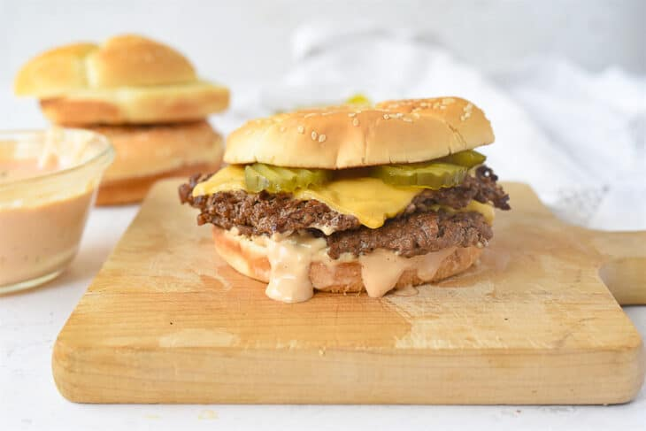

Home
Smash Burger Recipe

A timeless variation on the classic cheeseburger.
What seperates a smashburger from a standard hamburger are the beef patties, which
are pressed thin against the griddle or pan, resulting in thin and crispy edges and a caramelized flavor.
- Ground Beef
- Salt and Pepper or Preferred Seasoning
- Chedder or American Cheese
- Hamburger Buns
- Preferred Condiments
- Form the Beef: Take a small handful of your preferred ground beef mixture and form it into a small ball. Repeat with all of your ground beef.
- Prepare the Griddle: Heat your griddle or pan to about 375 degrees fahrenheit.
- Smash the Patties: Place a beef ball on the griddle, then drape a sheet of parchment paper over it. Now take a flat spatula or beef press and press down
on the beef ball until thin. Roll the spatula to the edges to ensure a nice caramelized crisp. Now remove the parchement paper, season with salt and pepper, and
cook on both sides. Once flipped, add a slice of your preferred cheese to the top side of the patty.
- Toast the Buns: Apply a thin coat of butter the both inside halves of your hamburger buns. In a seperate pan or empty part of the griddle, add both buns,
butter side down. Toast until golden brown.
- Assemble the Burger: Put your preferred condiments on the bottom bun, then stack the patties on top, add pickles if desired, and then place the
other half of the bun on top.